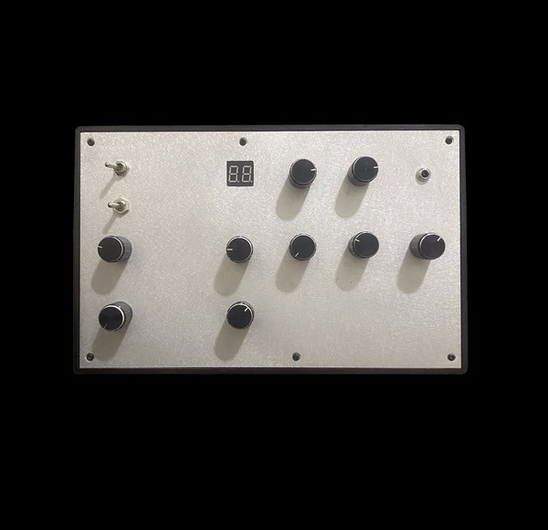
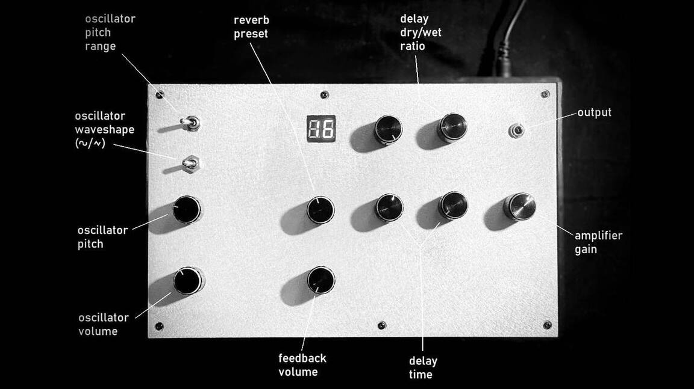
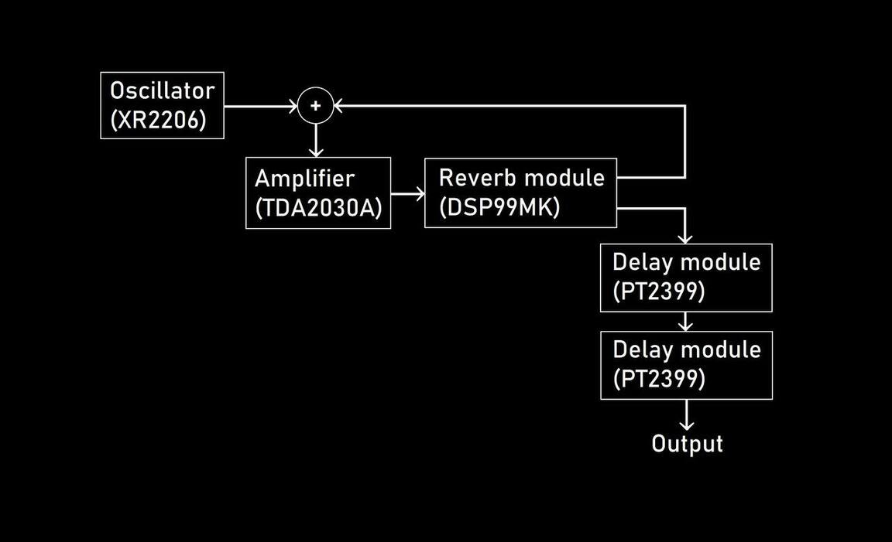

VLADISLAV GENERALOV
Feedback Synthesizer

The concept of this synth is coming from experiments with my DIY modular system. I tried different feedback chains and discovered one similar to this. I found it really useful for home practice and live performances.
So that synth was created, and I tried to keep it laconic. The absence of extra sound input or any CV controls is intentional. Limitations of being in a closed system are often very important for creative process. This synth can’t be patched or set up once, hands should always be touching knobs, directly controlling structure and timbre of sound.

